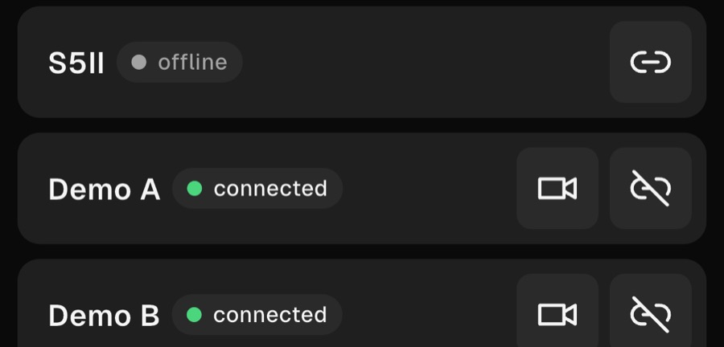
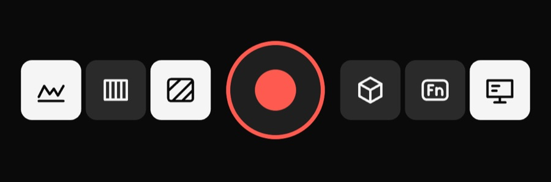
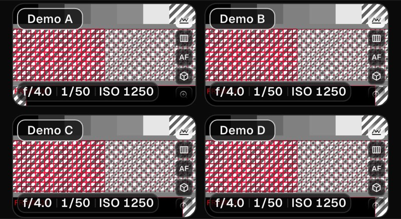
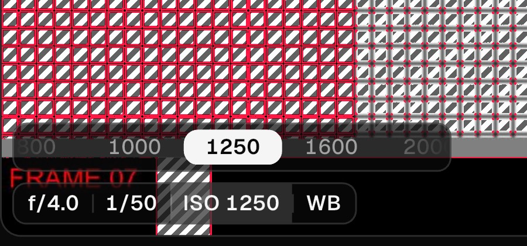

Obraz ze wszystkich kamer w jednej siatce, nagrywanie na wszystkich jednym przyciskiem, focus peaking, false color, zebra i LUT-y — przez Wi-Fi kamer, bez internetu na planie.

1. Włącz w aparacie połączenie Wi-Fi ze smartfonem (w aparacie: Wi-Fi → połączenie ze smartfonem).
2. W aplikacji stuknij Dodaj kamerę. Aplikacja sama szuka aparatu: na hotspocie telefonu, w Wi-Fi aparatu albo w routerze, do którego oba są podłączone.
3. Stuknij znaleziony aparat. Za pierwszym razem iOS zapyta o dostęp do sieci lokalnej — zezwól, przez nią aplikacja rozmawia z kamerami.
4. Niektóre aparaty proszą o potwierdzenie połączenia na swoim ekranie.
Aparat ma naraz tylko jednego kontrolera. Zamknij LUMIX Sync (i inne aplikacje zdalne), zanim się połączysz.
Każda zapisana kamera ma status: offline, connecting i connected. Ikona ogniwa łączy kamerę — nawet gdy zmieniła sieć, aplikacja znajdzie ją ponownie. Ikona kamery otwiera jej obraz, przekreślone ogniwo rozłącza.
Edytuj zmienia nazwy, usuwa kamery i zmienia ich kolejność — tę samą co kafli w siatce. Zapisane kamery mogą łączyć się same po uruchomieniu aplikacji.

Wszystkie połączone kamery obok siebie. Czerwony przycisk na środku włącza nagrywanie na każdej kamerze. Żeby zatrzymać wszystkie, przytrzymaj go — samo stuknięcie nigdy nie przerwie ujęcia. Nagrywająca kamera ma na kaflu REC z czasem i czerwoną ramkę.
Aplikacja nigdy sama nie zatrzymuje nagrania: przy zerwaniu łącza, zablokowaniu telefonu czy zejściu aplikacji w tło kamery nagrywają dalej.
Pasek pod siatką ma nakładki i cztery przyciski Fn, które wybierasz sam. Display ustala, co pokazują kafle: nazwy kamer, klatki i wiek obrazu, przyciski funkcyjne.

Focus peaking zaznacza ostre krawędzie, false color koloruje poziomy ekspozycji, zebra paskuje jasne miejsca. Każdą włączysz dla wszystkich kamer albo części (mała plakietka 1/4 mówi ilu); kolory i progi są w ustawieniach kamery.
Każda kamera może mieć LUT (.cube) nakładany przed nakładkami — jeden jest wbudowany, własne zaimportujesz z aplikacji Pliki.
Nakładki czytają podgląd z aparatu: skompresowany obraz tego, co pokazuje aparat. Służą do oceny ostrości i ekspozycji, nie do pomiarów.

Stuknij kafel, aby otworzyć kamerę na całym ekranie. Stuknij obraz, aby przenieść tam punkt ostrości. Pigułka na dole pokazuje przysłonę, czas i ISO — stuknij wartość i zmień ją pokrętłem. Powiększenie 1,5–4× pomaga sprawdzić ostrość.
Język (polski, angielski), motyw (Ciemny albo Słońce na jasny dzień), licencja i przywracanie zakupów, pomoc oraz dziennik diagnostyczny do wysłania, gdy coś nie działa. Wskazówki nad listą kamer ukryjesz i przywrócisz w Ustawienia › Pomoc.
Jedna kamera jest darmowa, ze wszystkimi funkcjami. Pro to jednorazowy zakup, który odblokowuje do czterech kamer naraz — bez subskrypcji. Kupione na innym urządzeniu? Przywróć zakupy w Ustawieniach.
Aparaty Panasonic LUMIX ze zdalnym sterowaniem przez Wi-Fi. Testowane na LUMIX S5II / S5IIX; inne nowe korpusy LUMIX z tym samym protokołem powinny działać.
Przełączanie AF / MF, tryb i obszar AF, predefiniowany balans bieli, stan aparatu (czas na karcie, bateria) i ramki ostrości z aparatu.